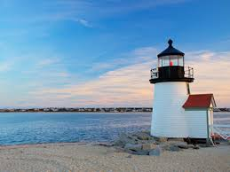

Cape cod is one of Massachusett's biggest tourist attractions. Cape Cod is known for its beaches, food, and its small communities. Cape cod is not busy in the fall and winter but in the spring and summer, it becomes very busy. While visiting the cape make sure to visit different beaches because they are all unique in their own way.
Cape Cod fun facts
- Fish that can be found in Cape Cod Bay include blue-finned tuna, sand eel, striped bass, cod, bonito, mackerel, Pollock, hadd
- Mammals that can be found in Cape Cod Bay include whales, dolphins, and seals.
- Cape Cod is getting smaller due to erosion, making the beaches along Cape Cod Bay appearing endless. The beaches are eroding at the rate of about one to two feet each year, with one eroding as much as ten feet a year.
